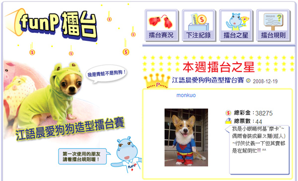
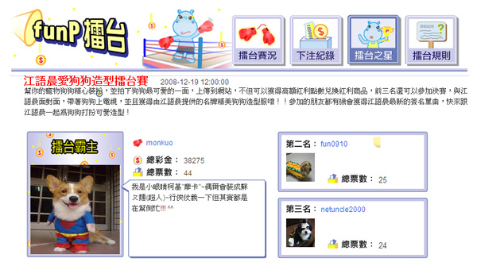

天啊!!!摩卡卡中了...funP擂台賽第1名!!<---連結在此 請點!
太好笑了~~現在我跟老爸兩個人很挫...因為我們無心插柳呀!
一週前不知在那個人的網誌逛到有這個活動! 因為文章寫著目前報名人數不多!! (感覺好慘啊!)
所以報名了!!噗....
而且也沒有通知各親朋好友~因為它投票好麻煩
要申請帳號還要手機認證有的沒的...我個人是覺得很麻環啦!!SO不想麻煩別人...悄悄的放著
現在...呃....得名了耶!要去SOGO參加決賽還是只是去領獎....實在是搞不清楚!真糟 
還好我一開始就表明..萬一要決賽我不要帶兒子上台歐! 
現在我家猛哥很挫....急著找人陪他
乾媽難洗用絕招拒絕他了...好狠!! (她說要先減肥...剩四天是要瘦500克的意思嗎?)
(她說要先減肥...剩四天是要瘦500克的意思嗎?)

擂台霸主 好響亮的頭銜啊!! 
在這先謝謝這42人投票給阿卡卡(2票是我們自己) ~哈哈..連投的人都不多吶!!! 妙了....
也希望"熱狗小臘腸"跟"武士馬爾濟斯"...你們都會去呀!!!